EcoLact / Arquitectura de software
Entidades y reglas de negocio
El lenguaje del centro de acopio en el código
El dominio representa las personas, operaciones y restricciones del negocio lácteo. Una entidad tiene significado propio: una entrega no es solamente una fila de base de datos, y un pago no es solamente un importe mostrado en una pantalla.
Relaciones de acopio, calidad y pago
Las relaciones se sustentan en los identificadores de las entidades y en las restricciones de persistencia. Se incluyen Valorización y Detalle para no inventar una relación directa que omita cómo se enlazan entrega y liquidación. Una entrega puede existir sin análisis; acopiadorId es nullable.


Consultar la fuente editable
flowchart TB
P[Proveedor] -->|realiza| E[Entrega]
A[Acopiador] -->|registra cuando corresponde| E
E -->|puede tener un análisis| C[Análisis de calidad]
E -->|referenciada por| V[Valorización de entrega]
C -. referencia opcional .-> V
P -->|titular de| L[Liquidación]
L -->|contiene| D[Detalle de liquidación]
D -->|referencia| V
L -->|referenciada por| PA[Pago de proveedor]
classDef default fill:#eaf3ff,stroke:#79a4df,color:#103b86,rx:7,ry:7;
Relaciones de producción
La receta describe requerimientos; el lote conserva consumos y cantidades realmente obtenidas. La leche es un insumo que entra por acopio. No se dibuja una asignación directa de entregas concretas a lotes: la migración correspondiente elimina ese enlace antiguo si está vacío.


Consultar la fuente editable
flowchart TB
P[Producto] -->|tiene versiones de| R[Receta]
R -->|define ingredientes mediante| RD[Detalle de receta]
RD -->|referencia| I[Insumo]
L[Lote de producción] -->|guarda consumos en| LI[LoteProduccionInsumo]
LI -->|referencia| I
L -->|planifica y obtiene mediante| PD[ProduccionDetalle]
PD -->|referencia| P
PD -. conserva receta y versión utilizadas .-> R
classDef default fill:#eaf3ff,stroke:#79a4df,color:#103b86,rx:7,ry:7;
Responsabilidades de las entidades
| Concepto | Significado y regla relevante |
|---|---|
| Proveedor y Acopiador | Identidad, estado y contexto de participación en acopio |
| Entrega | Litros, fecha, actor, proveedor y estado; cantidad positiva |
| Análisis de calidad | Mediciones y resultado; al confirmar queda inmutable |
| Liquidación y Pago | Cálculo del periodo y registro del desembolso son conceptos distintos |
| Insumo y Receta | Existencias y requerimientos por producto y versión |
| Lote y Producto | Ejecución productiva y resultado disponible para ventas |
Una regla que no depende de la pantalla
El constructor de Entrega rechaza litros menores o iguales a cero y un método de identificación vacío. Esa restricción se ejecuta al crear la entidad, aunque la petición provenga de web, app o una prueba. La entidad también expresa la ventana de edición de litros mediante permiteEditarLitros() y la constante de diez minutos.
La entidad no decide todo por sí sola. Comprobar que un proveedor está activo o que el acopiador puede operar en su zona exige consultar otros registros; RegistrarEntrega coordina esas reglas. Los Form Requests validan formato, las Policies autorizan acciones y los casos de uso orquestan la operación. Esta distribución evita atribuir toda la lógica a una sola clase.
El modelo de dominio tampoco es un esquema físico completo. Se omiten tablas auxiliares, consultas y detalles administrativos para mostrar únicamente relaciones relevantes y confirmadas. Los repositorios del dominio definen contratos; las entidades del ejemplo no heredan de Eloquent.
Evidencias de implementación
Las referencias identifican código revisado. El área de imagen está preparada para la captura manual del archivo indicado; el marcador visual no constituye una captura de la implementación.
La entidad protege sus invariantes
Entrega expresa litros, actor, proveedor, fecha y estado como conceptos del negocio.

Qué demuestra. Su constructor impide litros no positivos y un método de identificación vacío, sin depender de HTTP o Eloquent.
Archivo de imagen: dominio-entrega.png · Abrir imagen
Ubicación en GitHub: EcoLactWeb/app/Domain/Entrega/Entrega.php
Fragmento sugerido para la captura: líneas 14–37 de la revisión documentada.
Fuentes adicionales y alcance de la revisión
Revisión estática del repositorio local: 28 de octubre de 2026. Enlaces a la revisión 75901337489d; la existencia de cada archivo y los fragmentos sugeridos se comprobaron localmente. No se ejecutaron servicios de negocio ni se verificó un despliegue.
- EcoLactWeb/app/Domain/Entrega/Entrega.php
- EcoLactWeb/app/Domain/Calidad/AnalisisCalidad.php
- EcoLactWeb/app/Domain/Pago/ValorizacionEntrega.php
- EcoLactWeb/app/Domain/Pago/LiquidacionDetalle.php
- EcoLactWeb/app/Domain/Pago/PagoProveedor.php
- EcoLactWeb/app/Domain/Produccion/Receta.php
- EcoLactWeb/app/Domain/Produccion/RecetaDetalle.php
- EcoLactWeb/app/Domain/Produccion/ProduccionDetalle.php
- EcoLactWeb/app/Domain/Produccion/LoteProduccionInsumo.php
- EcoLactWeb/database/migrations/2026_09_21_100009_drop_lote_produccion_entregas_table.php